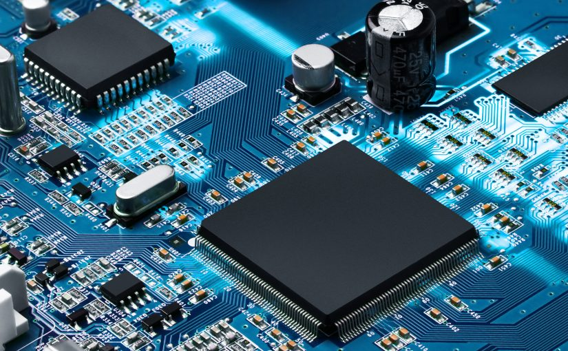
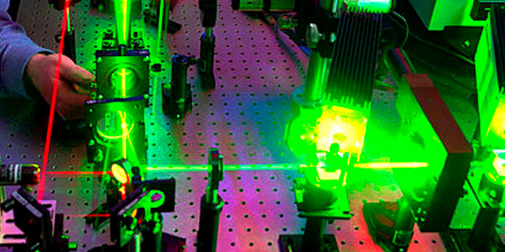

Embedded Systems

An embedded system is a computer system designed to perform specific functions, and whose components are integrated on a motherboard.
The central processing of the system is carried out thanks to a microcontroller. There are many known embedded systems:
- Arduino
- Raspberry Pi
- ESP32
Power Electronics
It is responsible for the study of devices, circuits, systems and procedures to transform and control large powers.
Wind turbines are an example of application of power electronics.
Bioengineering
Bioengineering is a multidiscipline that involves branches of medicine, mechanical, electronic and computer engineering.
They work with computational modeling and digital image processing (IA models).
Robotics
Its main objective is to design robotic machines capable of performing different automated tasks based on their software.
Photonics

Is the science of photon generation, control, and detection, particularly in the visible and near-infrared spectrum.
Communications
It is a branch of Engineering that solves signal transmission and reception problems and network interconnection.